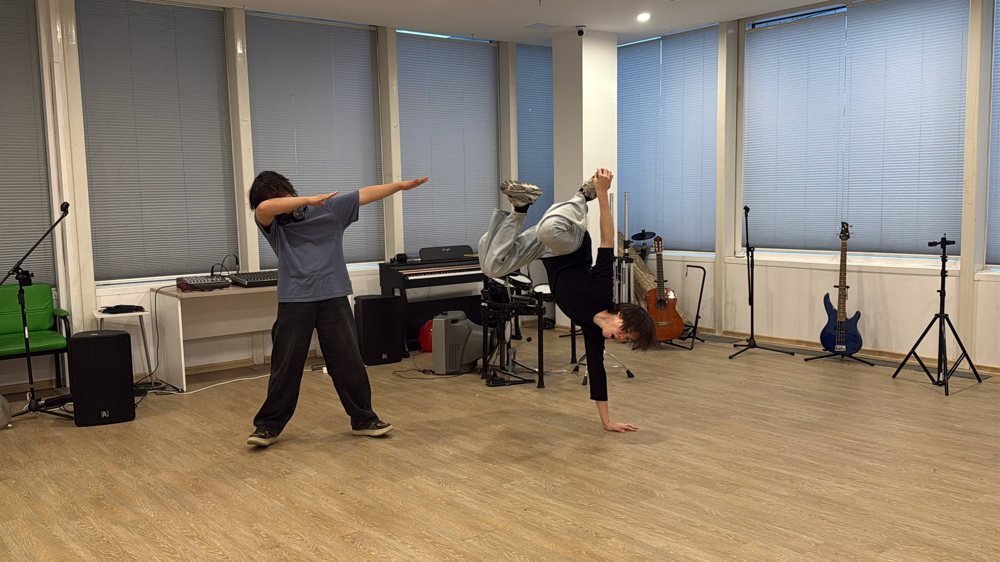
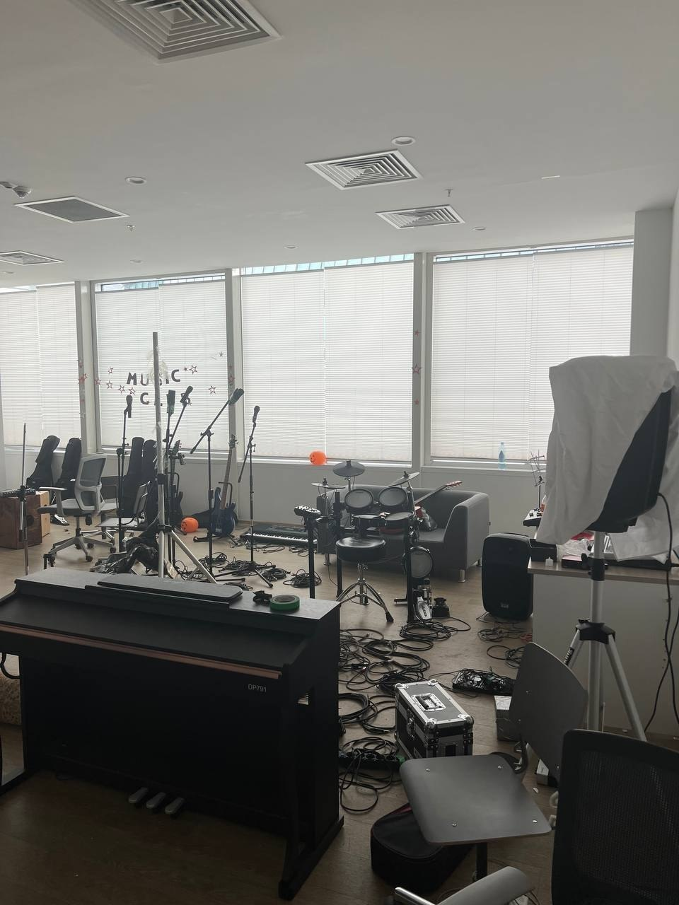
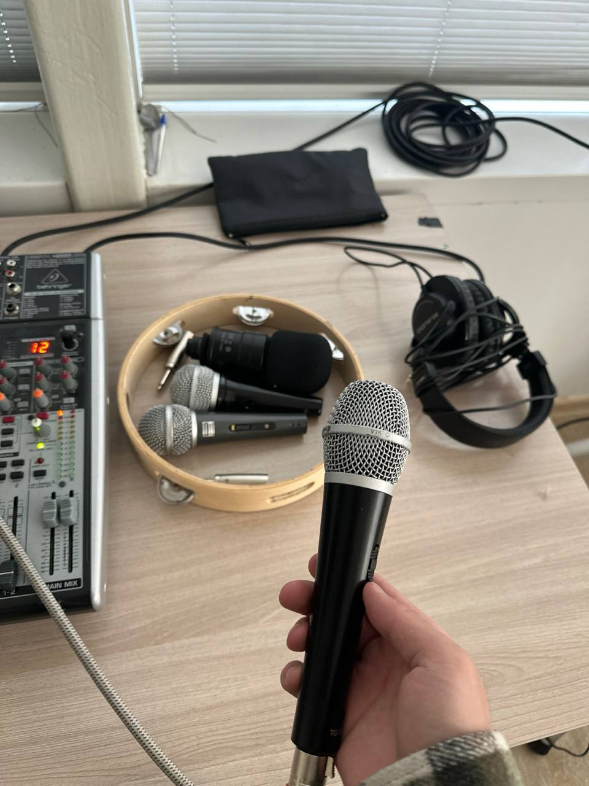

This page presents the musical equipment available in the University Music Club.
The purpose of this section is to show what students can use during rehearsals,
practice sessions, performances, and other club activities. The information on this
page should be based on equipment that was actually checked at the club. This makes
the page useful for students who want to understand what resources are available
before joining a rehearsal or preparing for a performance. The club can contain
different types of instruments and audio equipment, so each item should be described
according to its real use rather than by a generic description. The photographs on
this page are intended to document the actual club environment. The inventory table
below organizes the verified equipment into a simple structure so that visitors can
compare items more easily. Some equipment may be shared between students, while other
items may be reserved for specific activities. Students should also follow the club's
own rules when using the equipment and should return shared items after practice.
Musical Instruments
The club's instruments should be listed using the real equipment available in
the studio. Replace the examples below with verified information from the club.
Different instruments can support rehearsal, accompaniment, songwriting, and
live performances.

Music Club studio and rehearsal room.
Instrument Collection
The verified instrument collection should include the instruments that are
physically available in the club. Add the real names and details of the
instruments that you photographed or checked.
String Instruments
[REAL INSTRUMENT]
[REAL INSTRUMENT]
Keyboard Instruments
[REAL KEYBOARD OR PIANO]
Percussion Instruments
[REAL DRUM OR PERCUSSION INSTRUMENT]

Musical instruments used in the Music Club.
Audio Equipment
Audio equipment supports rehearsals, recording, communication, and live sound.
The information in this section should describe the real equipment found in the
club rather than equipment from a general music store catalogue.
Sound Equipment
The club may use microphones, speakers, mixers, amplifiers, cables, and other
sound equipment. Each item should be entered using its real name and, where
available, its real model or specification.
Check the equipment before use.
Connect the required cables carefully.
Test the sound before rehearsal or performance.
Return shared equipment after use.

Audio equipment used during Music Club activities.
Equipment Inventory
The following table is designed for the club's verified inventory. Replace every
bracketed value with information collected from the real Music Club before
submitting the assignment.
Important:
equipment information should be verified before publishing.
The term HD may appear in equipment
specifications, while DAW
may be used when discussing digital music production.
A keyboard may have different register ranges, while frequencies can be measured
in Hz2 in technical documentation. The formula H2O is an
example of subscript formatting used in HTML.
The club can mark especially important information as
important.
A small note can be shown using small text.
A word can also be presented as bold text or italic text.
The tag emphasizes a word without changing the meaning of the sentence.